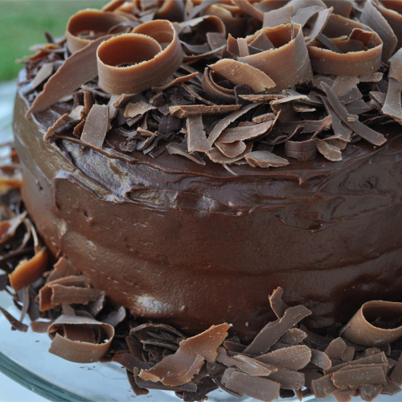

Extreme Chocolate Cake

Description
Chocolate cake with a slick layer of chocolate filling and an excess of chocolate on top
Ingredients
- 2 cups white sugar
- 1¾ cups all-purpose flour
- ¾ cup unsweetened cocoa powder
- 1½ teaspoons baking soda
- 1½ teaspoons baking powder
- 1 teaspoon salt
- 2 eggs
- 1 cup milk
- ½ cup vegetable oil
- 2 teaspoons vanilla extract
- 1 cup boiling water
- ¾ cup butter
- 1½ cups unsweetened cocoa powder
- 5⅓ cups confectioners' sugar
- ⅔ cup milk
- 1 teaspoon vanilla extract
Steps
-
Preheat oven to 350 degrees F (175 degrees C). Grease and flour two 9 inch cake pans.
-
Use the first set of ingredients to make the cake. In a medium bowl, stir together the sugar, flour, cocoa,
baking soda, baking powder and salt. Add the eggs, milk, oil and vanilla, mix for 3 minutes with an electric
mixer. Stir in the boiling water by hand. Pour evenly into the two prepared pans.
-
Bake for 30 to 35 minutes in the preheated oven, until a toothpick inserted comes out clean. Cool for 10
minutes before removing from pans to cool completely.
-
To make the frosting, use the second set of ingredients. Cream butter until light and fluffy. Stir in the
cocoa and confectioners' sugar alternately with the milk and vanilla. Beat to a spreading consistency.
-
Split the layers of cooled cake horizontally, cover the top of each layer with frosting, then stack them
onto a serving plate. Frost the outside of the cake.